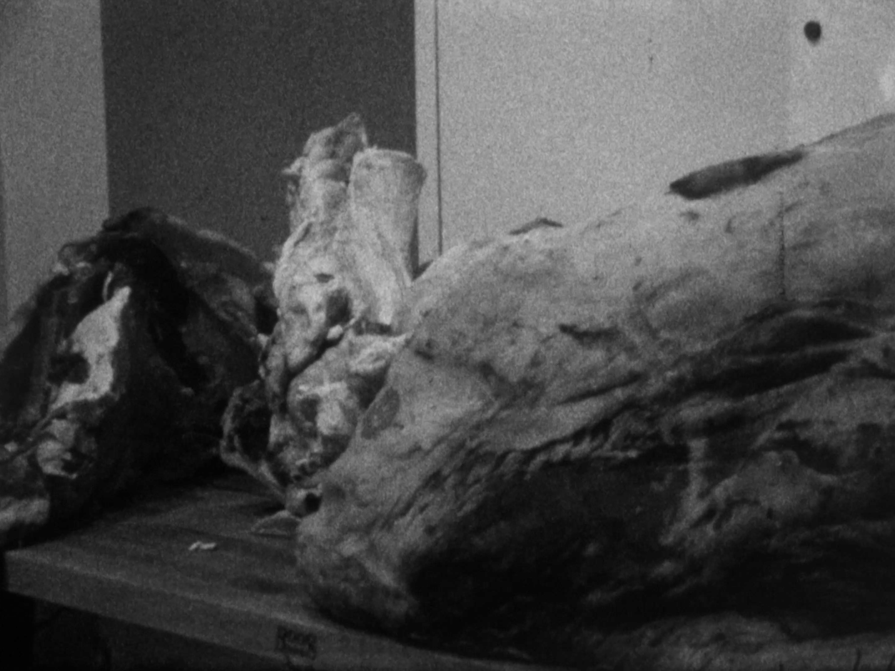

FEBRUARY OMEN

2025 | Super 8 | 5'
preview here
“If you eat meat it’s bad luck. If you see the meat without eat, that’s fine.” This is the superstition (or wisdom?) offered by director Mary Rose McClain’s grandmother, heard in hypnotic voice-over accompanied by a Can-esque score from Programmique . A marvel of compression, February Omen's five lo-fi, high-texture minutes connect familial histories, carnal tastes, and metropolitan industrialization. - New York Film Festival 63
The 2nd tribute to my grandmother's world of Sicilian superstitions.
One week after recording her dialogue my Grandma Rose was diagnosed with advanced stage lung cancer, ravaging her ability to use her voice.